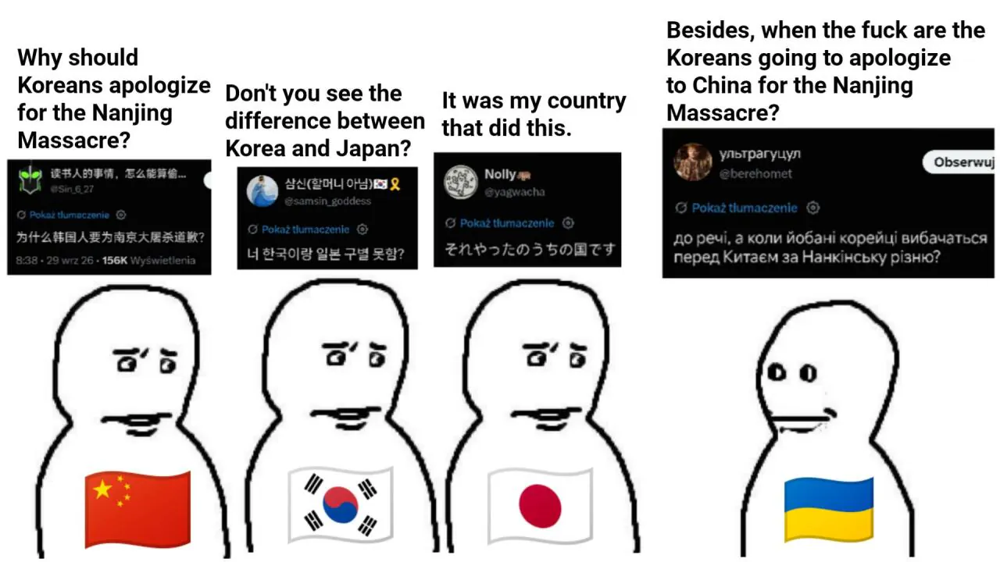

우크라이나 : 우리 전쟁에 왜 참가안해, 한국 이 배은망덕한 XXXX들아
한국 : 우크라이나가 해준게 뭔데? 전쟁 때 소련이랑 같이 침략한거?
우크라이나 : 그건 그렇고, 빌어먹을 한국인들은 난징 대학살을 중국에 언제 사과할 거야?
일본 : 그거 우리나라야.
중국 : 난징 대학살을 왜 한국이 사과하는데?
한국 : 한국이랑 일본 구별 못함?

우크라이나 : 우리 전쟁에 왜 참가안해, 한국 이 배은망덕한 XXXX들아
한국 : 우크라이나가 해준게 뭔데? 전쟁 때 소련이랑 같이 침략한거?
우크라이나 : 그건 그렇고, 빌어먹을 한국인들은 난징 대학살을 중국에 언제 사과할 거야?
일본 : 그거 우리나라야.
중국 : 난징 대학살을 왜 한국이 사과하는데?
한국 : 한국이랑 일본 구별 못함?
우크라이나는 친중 국가라서?
실제로 안보조약도 맺었었고ㅋㅋ
그리고 추가적으로 한국은 강제적으로 일본에게 식민지배를 당해서 병합된 케이스고
우크라이나는 자발적으로 사회주의 공화국을 세우고 소련 품으로 들어간 놈들임
소련연방 창립멤버인 새끼들이 식민지배당한 한국을 가지고 병합도르하는게 애미뒤진거지 한국인들이 즈그들처럼 좋아서 일본에 먹히고 징병된줄 아나
이미 전쟁으로 뒤졌으려나?
아 안보조약이 아니고 중국한테 핵안전 보장 약속받았었구나ㅋㅋ
쟤들 야스쿠니 참배도 함ㅋㅋㅋ
친중 친일 혐한임ㅋㅋㅋ
중국에 항모팔고, 일본에 극우신사참배 하는데, 한국은 외교관이 한국인패고 도망가는거 보면 찐혐한 맞는듯?
우리가 너희들 6.25때 레드팀이잖아
하니깐 비꼴려고 하는 거 같긴한데
일제 강점기 하 한-일 관계와
6.25때 소련-우크라 관계가
차이가 나서 의미없는 가정이긴 해
어디서부터 지적해야할지... 너무 한심한 개소리라ㅋㅋㅋ
진짜 번역 생기고부터 한중일이 왜 서로를 더 존중하게 된지 알거같음ㅋㅋㅋ
전쟁중독에 미쳐버린
차라리 진주만으로 미국한테 사과하라하던가
트짹 바벨탑 건립 이후에 말싸움은 수준이 맞아야 성립되는거라고 느낌
좆크라는 이제 러시아에 흡수합병 되는게 맞다
거기까진 아니긴 한데.. 진짜 정신나간 미친 소리긴 함
푸틴을 응원하게 만들어주는 좆박은 저능아 우크라 새끼들
소련 시절 우크라이나인 = 러시아인과 법적으로 동일한 소련 국민이었음
일제 시절 조선인 = 일본인과 법적으로 신분이 달랐고 같은 국민 아니었음
이걸 알기엔 너무저능한가봐
일본에서 대대로 살고있지만 일본인도 아니고 그렇다고 한국인도 아닌 조선적 논란이 생긴 이유도 일본은 일제시절 조선인에게 국적을 부여해준적이 없음
그냥 강제로 국가도 없고 한지역에 모여 살고는 있지만 무국적이라는 말도 안 되는 상태로 방치하고 현재 그 무국적이라는 말장난으로 방치하다 논란이 되는게 일본 조선적
애초에 우리나라하고 뭣도 없으면서 지랄이야
우크라 사람들 입장에서 저 논리가 뭐냐면
소련시절 우크라이나 지역 군인들도 625 북한편으로 참전했던걸로 한국이 우크라이나를 깠으니,
난징 학살 주범인 일본제국에 당시 한국인들도 포함되었으니 니들도 중국에 사과해라 이런 논리임
디테일을 안다면 저런 말 못하는게 맞는데
다른 국가 사람들 끼리 감정싸움하는데 서로의 디테일에 관심가질 이유는 없는거지
이렇게 들으닌까 이해가 가네
뜬금없이 왜 나오나 했더니 비꼬는거구나
우크라는 나름 소련이랑 두번이나 전쟁했다가 져서 병합됐는데 왕의 싸인 한방으로 무력하게 흡수된 좆선이랑 같나?
게다가 좆련의 개병신같은 국정 운영으로 대기근 터져서 국민 수백만명 사망함 (홀로모도르). 일제시대때도 이런 참사는 없었음.
얼마나 싫었으면 나치가 진격해오니 “역쉬 쏘련 담당일진은 낙지행님들이지!“하며 나치에 적극 부역함. 나치가 운터멘쉬라 부르며 경멸하고 노예화해야 한다고 대놓고 떠들던 슬라브족이..
결정적으로 그 개가튼 소련의 직계후손인 러시아랑 지금도 전쟁중임. 크림반도 병합으로 촉발된 돈바스 전쟁까지 치면 벌써 10년이 넘었고 수도가 폭격을 당하고 온 나라가 쑥대밭. 사상자는 100만명이 넘음.
좆크라들 입장에선 “625때 니들이 우리 침략했잖아“라는 말은 “한국인들은 난징대학살에 대해 중국에 언제 사과할래?“급의 개소리로 들릴 수 밖에 없음.
그러기엔 소련에 서기장만 둘 배출했는데?
저긴 한쪽으로 못묶어
우크라이나에서 야스쿠니 참배한 이유가 그거였나... 그게 한국에 있는건줄 알았나봄
한국과 한국인은 우월하지는 않지만, 너님새끼들과 나라가 깝칠만큼 개호구가 아니란걸 앞으로 좀 주지시켜줘야할듯.
자꾸 한국과 우크라이나를 등치시키려는 애들이 있던데. 조선이나 한국이나 오로지 땅 하나 뺏자고,
인접국 10만명 민간인을 학살하고 영토를 차지하려는 과거사는 상상도 못했고. 그런 사람을 국부로 추앙하지도 않는다...
하얀베트남 새끼들
진짜 화이트니거 그자체 ㅋㅋㅋ
아! 어째 사람 말로 상대하는데 개소리가 돌아오는 그림 얼마전에 본거 같더니 그거였구나
??? : 우리가 러시아로부터 유럽과 자유 진영을 지키고 있으니까, 너희들은 감사 해야만해!!
화이트 베트콩 ㅋㅋ
병신들 드론에 갈려라
역사를 잊은 민족에게 미래는 없다 라는 말이 기억해서 복수하자거나 다시는 당하지 말자는 의미만있는줄알았는데 요즘 우크리 보면 역사를 모르니 주변국가에 계속 병신짓 해서 적을 늘리네
역사를 잊은 민족은 답이 없다라고 해야할듯ㅋㅋ
우리가 뭐 조약을 맺은것도 아니고..
고르바초프가 잘못했네 왜 소련을 해체해서 저런놈을 러시아 밖에 생기게 한거야
우리나라를 적으로 만들어서 지지도 결집시키겠다는 판단인거 같은데
아주 개씹련들인
고양이손이라도 빌려야 하는건 알겠는데 왜 고양이를 패냐고 ㅋㅋㅋㅋ
전쟁하다보니 바보만 남아버린건가..
전쟁이 이래무섭슴다
저게 아마 내가 알기론 우크라이나가 우리한테 무기 좀 지원해달라고 했는데 우리가 '야, 너네 6.25때 레드팀으로 우리나라 쳐들어왔잖아?' 라고 했더니 거기에 대한 반발로 '그럼 난징대학살 났을 때 한국도 일본 식민지였으니까 너네도 책임있잖아. 사과해' 이렇게 대응했던 거라고 알고 있음.
참고로 6.25 당시 우크라이나는 소비에트 연방(USSR)에 속해 있었으며 6.25때 참전한 제64전투항공군단 출신 중에 우크라이나 출신 지휘관이나 파일럿, 기술자들이 있었음. 또한 당시 소련의 핵심 방산 생산 기지였던 우크라이나의 하르키우(Kharkiv)에서 생산된 군수물자가 6.25에서 사용되었을 것으로도 추정된다네.
하여간 쟤네가 지네 상황이랑 우리 상황이랑 비슷하다고 착각하고 뭘 모르고 한 소리임.
저 우구라새끼 난징드립이 뭐냐면
일제에 한국이 식민지로 합병되었으니 한국인들이 난징가서 중국인들 학살했다고 개논리 펼치면서 비꼬는거
근데 문제는 난징대학살은 1937년이고 조선인이 군인으로 징병된건 1938년임
설령 징병되었다고 한들...
한국이 우크라이나를 왜 도와줘야함?